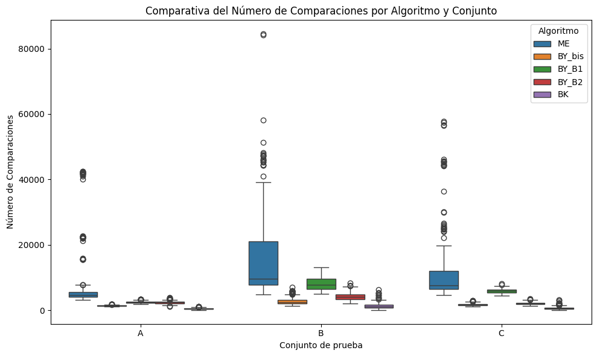

Práctica: Algoritmos de intersección y unión de conjuntos en el modelo de comparación
Alumno: David Segundo Garcia
Introducción
Análisis Comparativo de Algoritmos de Intersección de Conjuntos
Este estudio evalúa y compara el desempeño de varios algoritmos diseñados para resolver el problema de la intersección de conjuntos ordenados, un problema fundamental en estructuras como los índices invertidos y sistemas de recuperación de información (Hwang & Lin, 1971). En dichos contextos, los conjuntos se representan frecuentemente como listas ordenadas de enteros, lo cual permite aplicar algoritmos especializados de búsqueda y comparación.
Se implementaron y analizaron las siguientes estrategias algorítmicas:
Melding (ME): basado en el escaneo secuencial de punteros para conjuntos ordenados.
Baeza-Yates (BY) con variantes de búsqueda interna:
Bisección (BY_bis): búsqueda binaria clásica.
Búsqueda exponencial (BY_B1): óptima cuando los tamaños de los conjuntos son muy distintos.
Búsqueda doblemente exponencial (BY_B2): adaptativa, eficiente al aprovechar información previa.
Barbay & Kenyon (BK): enfoque adaptativo que memoriza posiciones previamente exploradas para acelerar búsquedas subsecuentes.
Estos algoritmos surgen como solución al problema de determinar eficientemente la intersección entre listas ordenadas, minimizando el número de comparaciones y el uso de memoria. En particular, el algoritmo de Baeza-Yates aplica una estrategia de divide y vencerás al buscar la mediana del primer conjunto dentro del segundo y dividir el problema en subproblemas más pequeños (Baeza-Yates, 2004). Por otro lado, el algoritmo de Barbay y Kenyon (2006) emplea búsquedas adaptativas para aprovechar concentraciones locales y reducir trabajo redundante. Ambos algoritmos están diseñados para ser óptimos incluso en el peor caso.
Además, se consideran técnicas como merge (fusión secuencial) para listas de tamaño similar, y estrategias como Small vs Small (SvS) para intersecciones entre múltiples conjuntos, que consisten en intersectar los subconjuntos más pequeños primero, obteniendo así ganancias de eficiencia (Demaine et al., 2001).
Metodología de Evaluación
Los algoritmos fueron evaluados experimentalmente sobre tres tipos de conjuntos:
Conjunto A: pares de listas ordenadas.
Conjunto B: tripletas de listas ordenadas.
Conjunto C: tetrapletas (cuádruples) de listas ordenadas.
Para cada algoritmo y conjunto se midieron tres métricas clave:
Tiempo de ejecución (en segundos)
Número de comparaciones realizadas (costo en el modelo de comparación)
Tamaño de la intersección resultante (control de consistencia)
Estos resultados permiten contrastar la eficiencia algorítmica bajo distintas configuraciones de entrada, diferenciando entre comportamientos óptimos y degenerados. Además, se tomaron en cuenta los modelos de costo teóricos, como el modelo de comparación, donde el número mínimo de comparaciones requeridas para unir dos conjuntos de tamaños \(m\) y \(n\) se aproxima por \(\log_2\binom{m+n}{m}\) (Hwang & Lin, 1971; MacKay, 2003), y los escenarios donde \(m \ll n\), que justifican el uso de búsquedas binarias para mejorar la eficiencia a \(O(m \log n)\).
Instrucciones
Lea el archivo de datos provisto, el cual se encuentra en formato JSON, y contiene múltiples listas de datos:
Conjunto A que contiene pares de listas.
Conjunto B que contiene tripletas de listas.
Conjunto C que contiene tuplas de 4 listas (tetrapleta).
Implementación de Algoritmos:
Implemente los algoritmos de Melding (ME), Baeza-Yates (BY) y de Barbay & Kenyon (BK).
Implemente BY parametrizando con algoritmos de búsqueda: bisección, y búsqueda no acotada B1 y B2 (ver Unidad 4).
Experimentación:
Calcule las intersecciones para los datos de cada grupo de listas (A, B y C).
Acumule el tiempo en segundos y el número de comparaciones para cada operación. Es posible que necesite repetir varias veces el procedimiento para medir tiempos de manera fiable.
Cree gráficos boxplot para cada conjunto de listas con los siguientes aspectos, incluya en cada gráfica todos los algoritmos para que sean fáciles de comparar:
Tiempo en segundos de los tres experimentos, por algoritmo.
Número de comparaciones de los tres experimentos, por algoritmo.
Longitudes de las intersecciones resultantes para A, B, C. Este también es un gráfico de control, úselo para detectar posibles errores.
Análisis:
Analice los resultados obtenidos en los gráficos boxplot. Examine las diferencias en tiempo, número de comparaciones y longitud de las intersecciones entre los distintos algoritmos y conjuntos de listas.
Discuta cualquier tendencia, anomalía o patrón interesante observado. Reflexione sobre cómo los diferentes algoritmos afectan el rendimiento y la eficiencia en las operaciones de intersección.
#
Solución
Definimos las librerías que usaremos:
# Librerías estándarimport osimport jsonimport timefrom typing import Tuple, Optionalfrom google.colab import driveimport pandas as pdimport matplotlib.pyplot as pltimport seaborn as sns# Montamos Google Drivedrive.mount('/content/drive')
Mounted at /content/drive
Carga de archivos para iniciar procesamiento
Este bloque de código carga tres conjuntos de datos en formato JSON que contienen listas ordenadas para experimentos de intersección de conjuntos. Primero define las rutas a los archivos correspondientes a los conjuntos A (pares), B (tripletas) y C (tetrapletas), luego utiliza una función para leer cada archivo y cargar su contenido en memoria. Si algún archivo no se encuentra, muestra una advertencia. Finalmente, imprime cuántas instancias hay en cada conjunto y asigna los datos a variables individuales (dataset_a, dataset_b, dataset_c) para su uso posterior en la evaluación de algoritmos.
# Definir ruta base del directorio de trabajodata_dir = os.getcwd()# Definir rutas absolutas a los archivos de datosdataset_paths = {"A": os.path.join(data_dir, "/content/postinglists-for-intersection-A-k=2.json"),"B": os.path.join(data_dir, "/content/postinglists-for-intersection-B-k=3.json"),"C": os.path.join(data_dir, "/content/postinglists-for-intersection-C-k=4.json")}# Función para cargar archivos JSONdef load_json_data(file_path: str):try:withopen(file_path, 'r') asfile:return json.load(file)exceptFileNotFoundError:print(f"Archivo no encontrado -> {file_path}")returnNone# Cargar los conjuntos de datosdatasets = {key: load_json_data(path) for key, path in dataset_paths.items()}dataset_a = datasets["A"]dataset_b = datasets["B"]dataset_c = datasets["C"]# Reportar tamaños de los conjuntosprint(f"Conjunto de datos A (pares): {len(dataset_a) if dataset_a else0}")print(f"Conjunto de datos B (tripletas): {len(dataset_a) if dataset_a else0}")print(f"Conjunto de datos C (tetrapletas): {len(dataset_a) if dataset_a else0}")
Conjunto de datos A (pares): 200
Conjunto de datos B (tripletas): 200
Conjunto de datos C (tetrapletas): 200
Implementación y Descripción Técnica de los Algoritmos
Este código define una clase llamada ComparisonCounter que permite contar cuántas comparaciones se realizan durante la ejecución de algoritmos de intersección de conjuntos. La clase incluye métodos para comparar dos valores y reiniciar el contador. Además, se define una función load_datasets que carga desde un archivo JSON tres conjuntos de datos etiquetados como A, B y C, y los retorna por separado para su procesamiento posterior.
# Clase para contar comparaciones durante las interseccionesclass ComparisonCounter:def__init__(self):self.count =0def compare(self, a, b) ->int:"""Compara dos valores y registra la comparación."""self.count +=1if a < b:return-1elif a > b:return1return0def reset(self):"""Reinicia el contador a cero."""self.count =0# Función para cargar datasets A, B y C desde un JSONdef load_datasets(path: str):withopen(path, 'r', encoding='utf-8') asfile: data = json.load(file)return data.get('A'), data.get('B'), data.get('C')
Algoritmos de búsqueda
Función de búsqueda binaria
Esta función implementa una búsqueda binaria instrumentada, que busca un elemento x dentro de una lista ordenada arr, mientras registra el número de comparaciones realizadas mediante un objeto ComparisonCounter. Devuelve el índice donde se encuentra x, o -1 si no está presente.
def instrumented_binary_search( arr: list[int], x: int, low: int=0, high: Optional[int] =None, counter: ComparisonCounter =None) ->int:""" Realiza una búsqueda binaria en `arr` para encontrar `x`, registrando las comparaciones realizadas mediante un contador. Args: arr (list[int]): Lista ordenada donde buscar. x (int): Elemento objetivo. low (int): Límite inferior del rango de búsqueda. high (Optional[int]): Límite superior (inclusive). counter (ComparisonCounter): Contador de comparaciones obligatorio. Returns: int: Índice de `x` si se encuentra, o -1 en caso contrario. """if counter isNone:raiseValueError("Se requiere un ComparisonCounter.") high =len(arr) -1if high isNoneelse highwhile low <= high: mid = (low + high) //2cmp= counter.compare(arr[mid], x)ifcmp==0:return midelifcmp<0: low = mid +1else: high = mid -1return-1
Dobling search (B1)
Esta función realiza una búsqueda exponencial seguida de una búsqueda binaria para localizar un elemento x en una lista ordenada arr, comenzando desde una posición inicial start. Usa un contador (ComparisonCounter) para registrar las comparaciones realizadas. Si encuentra el elemento, retorna su índice; si no, devuelve la posición donde se debería insertar (upper bound).
def exponential_binary_search( arr: list[int], x: int, start: int=0, counter: ComparisonCounter =None) ->int:""" Realiza una búsqueda exponencial seguida de una búsqueda binaria para encontrar `x`. Args: arr (List[int]): Lista ordenada donde buscar. x (int): Elemento objetivo. start (int): Índice inicial desde donde buscar. counter (ComparisonCounter): Objeto contador para registrar comparaciones. Returns: int: Índice de `x` si se encuentra, o posición de inserción (upper bound) si no está presente. """if counter isNone:raiseValueError("Se requiere un ComparisonCounter.") n =len(arr) bound =1# Expansión exponencial hasta encontrar un rango que pueda contener xwhile start + bound < n and counter.compare(arr[start + bound], x) <0: bound *=2# Definición del rango para la búsqueda binaria low = start + bound //2 high =min(start + bound, n -1)# Búsqueda binaria instrumentada dentro del rango encontrado pos = instrumented_binary_search(arr, x, low, high, counter)return pos if pos >=0else high +1
Búsqueda B2 (doble doubling)
Esta función implementa la búsqueda B2, que consiste en un doble salto exponencial para encontrar un rango adecuado y luego una búsqueda exponencial interna (con binaria incluida) para localizar un elemento x en una lista ordenada arr. Utiliza un ComparisonCounter para contar comparaciones y devuelve el índice de x si se encuentra, o su posición de inserción si no.
def double_exponential_search( arr: list[int], x: int, start: int=0, counter: ComparisonCounter =None) ->int:""" Búsqueda B2 (doble salto exponencial + búsqueda exponencial interna). Args: arr (list[int]): Lista ordenada donde buscar. x (int): Elemento objetivo. start (int): Índice inicial desde donde buscar. counter (ComparisonCounter): Contador de comparaciones (requerido). Returns: int: Índice de `x` si se encuentra, o posición de inserción si no está. """if counter isNone:raiseValueError("Se requiere un ComparisonCounter.") n =len(arr) exp =1# Salto exponencial externo para delimitar un rango ampliowhile start + (1<< exp) < n and counter.compare(arr[start + (1<< exp)], x) <0: exp +=1# Definir los límites internos outer_low = start + (1<< (exp -1)) outer_high =min(start + (1<< exp), n -1)# Realizar búsqueda exponencial interna dentro del rango identificadoreturn exponential_binary_search(arr, x, outer_low, counter)
Algoritmos de intersección
Melding Intersection (ME)
Esta función implementa el algoritmo Melding (ME) para calcular la intersección de múltiples listas ordenadas. Utiliza punteros sincronizados para comparar los elementos actuales de cada lista y avanzar solo aquellos que aún no alcanzan el valor máximo observado. Si todos coinciden, el valor se agrega a la intersección. Usa un ComparisonCounter para registrar el número de comparaciones realizadas, y retorna tanto la lista resultante como ese conteo.
def melding_intersection( sets: list[list[int]], counter: ComparisonCounter =None) -> Tuple[list[int], int]:""" Realiza la intersección de múltiples listas ordenadas usando el algoritmo Melding (ME). Este método compara los elementos actuales de cada lista y avanza los punteros hasta que todos coincidan en un mismo valor, o se alcanza el final de alguna lista. Args: sets (list[list[int]]): Listas ordenadas a intersectar. counter (ComparisonCounter, opcional): Objeto para contar comparaciones. Returns: Tuple[list[int], int]: - Lista resultante con los elementos comunes. - Número total de comparaciones realizadas. """if counter isNone: counter = ComparisonCounter()ifnot sets:return [], counter.countiflen(sets) ==1:return sets[0], counter.count result = [] pointers = [0] *len(sets)whileall(ptr <len(sets[i]) for i, ptr inenumerate(pointers)): current_values = [sets[i][ptr] for i, ptr inenumerate(pointers)] max_val =max(current_values, key=lambda v: v)# Contar comparaciones al encontrar el máximofor val in current_values: counter.compare(val, max_val)ifall(counter.compare(val, max_val) ==0for val in current_values): result.append(max_val) pointers = [ptr +1for ptr in pointers]else:for i inrange(len(sets)):while pointers[i] <len(sets[i]) and counter.compare(sets[i][pointers[i]], max_val) <0: pointers[i] +=1return result, counter.count
Baeza-Yates
Esta función implementa el algoritmo Baeza-Yates utilizando búsqueda binaria instrumentada para calcular la intersección de varias listas ordenadas. Ordena las listas de menor a mayor para reducir el número de comparaciones, luego busca cada elemento del conjunto más pequeño en los demás. Usa un ComparisonCounter para registrar las comparaciones realizadas y devuelve tanto la intersección resultante como el conteo total de comparaciones.
def baeza_yates_bisection( sets: list[list[int]], counter: ComparisonCounter =None) -> Tuple[list[int], int]:""" Aplica el algoritmo Baeza-Yates usando búsqueda binaria instrumentada para obtener la intersección de múltiples listas ordenadas. Se ordenan las listas por tamaño ascendente para minimizar comparaciones en búsquedas sucesivas. Args: sets (list[list[int]]): Listas ordenadas a intersectar. counter (ComparisonCounter, opcional): Objeto para contar comparaciones. Returns: Tuple[list[int], int]: - lista resultante con los elementos comunes. - Número total de comparaciones realizadas. """if counter isNone: counter = ComparisonCounter()ifnot sets:return [], counter.countiflen(sets) ==1:return sets[0], counter.count# Ordenar listas por tamaño ascendente para eficiencia sorted_sets =sorted(sets, key=len) result = sorted_sets[0].copy()for s in sorted_sets[1:]: result = [e for e in result if instrumented_binary_search(s, e, 0, None, counter) !=-1]ifnot result:breakreturn result, counter.count
Baeza-Yates con búsqueda exponencial
Esta función implementa la variante B1 del algoritmo Baeza-Yates, que utiliza búsqueda exponencial para encontrar un elemento en múltiples listas ordenadas. Para cada elemento del conjunto más pequeño, verifica si está presente en los demás conjuntos usando exponential_binary_search. Registra las comparaciones mediante un ComparisonCounter y retorna la intersección obtenida junto con el número total de comparaciones realizadas.
def baeza_yates_b1( sets: list[list[int]], counter: ComparisonCounter =None) -> Tuple[list[int], int]:""" Aplica el algoritmo Baeza-Yates con búsqueda exponencial (B1) para intersectar múltiples listas ordenadas. Para cada elemento del conjunto más pequeño, se verifica su presencia en los demás conjuntos utilizando búsqueda exponencial seguida de búsqueda binaria. Args: sets (list[list[int]]): Listas ordenadas a intersectar. counter (ComparisonCounter, opcional): Objeto para contar comparaciones. Returns: Tuple[list[int], int]: - Lista con los elementos comunes. - Total de comparaciones realizadas. """if counter isNone: counter = ComparisonCounter()ifnot sets:return [], counter.countiflen(sets) ==1:return sets[0], counter.count sorted_sets =sorted(sets, key=len) smallest = sorted_sets[0] result = []for e in smallest:ifall(exponential_binary_search(s, e, 0, counter) !=-1for s in sorted_sets[1:]): result.append(e)return result, counter.count
Baeza-Yates con búsqueda exponencial (B2)
Esta función implementa la variante B2 del algoritmo Baeza-Yates, que utiliza una búsqueda doblemente exponencial para calcular la intersección de listas ordenadas. Optimiza el proceso guardando la última posición de búsqueda en cada lista, evitando comenzar desde el inicio cada vez. Usa un ComparisonCounter para registrar comparaciones y retorna la lista de elementos comunes junto con el total de comparaciones realizadas.
def baeza_yates_b2( sets: list[list[int]], counter: ComparisonCounter =None) -> Tuple[list[int], int]:""" Algoritmo Baeza-Yates con búsqueda doblemente exponencial (B2) para intersección de listas ordenadas. Optimiza las búsquedas recordando la última posición encontrada en cada lista, evitando escanear desde el principio cada vez. Args: sets (list[list[int]]): Listas ordenadas a intersectar. counter (ComparisonCounter, opcional): Objeto para contar comparaciones. Returns: Tuple[list[int], int]: - Lista resultante con los elementos comunes. - Número total de comparaciones realizadas. """if counter isNone: counter = ComparisonCounter()ifnot sets:return [], counter.countiflen(sets) ==1:return sets[0], counter.count sorted_sets =sorted(sets, key=len) smallest = sorted_sets[0] result = [] positions = [0] *len(sorted_sets)for e in smallest: matched =Truefor i inrange(1, len(sorted_sets)): s = sorted_sets[i] start_pos = positions[i] pos = double_exponential_search(s, e, start_pos, counter)if pos >=len(s) or counter.compare(s[pos], e) !=0: matched =Falsebreak# actualizar la posición para la siguiente búsqueda positions[i] = posif matched: result.append(e)return result, counter.count
Barbay & Kenyon (BK)
Esta función implementa el algoritmo Barbay & Kenyon (BK) para calcular la intersección de múltiples listas ordenadas. Utiliza una estrategia adaptativa, donde cada lista busca un candidato común utilizando una función de búsqueda eficiente (por defecto, búsqueda exponencial). Los punteros se actualizan dinámicamente para evitar retrocesos, y se registra el número total de comparaciones con un ComparisonCounter. La función devuelve la intersección resultante y el número total de comparaciones realizadas.
def bk_intersection( lists: list[list[int]], findpos: callable= exponential_binary_search) -> Tuple[list[int], int]:""" Algoritmo de intersección Barbay & Kenyon (BK) para múltiples listas ordenadas. Usa una estrategia adaptativa basada en búsqueda exponencial (por defecto) para encontrar coincidencias, avanzando los punteros dinámicamente según el valor candidato. Args: lists (list[list[int]]): Conjuntos ordenados a intersectar. findpos (callable): Función de búsqueda con conteo de comparaciones (por defecto, búsqueda exponencial + binaria). Returns: Tuple[list[int], int]: - lista con los elementos comunes a todas las listas. - Número total de comparaciones realizadas. """ counter = ComparisonCounter() n =len(lists)if n ==0orany(not lst for lst in lists):return [], 0 pointers = [0] * n result = []# Valor inicial candidato candidate = lists[0][0]whileTrue: match_count =0for i inrange(n): pos = findpos(lists[i], candidate, pointers[i], counter) pointers[i] = posif pos >=len(lists[i]):return result, counter.count value = lists[i][pos]if value == candidate: match_count +=1if match_count == n: result.append(candidate) match_count =0 pointers[i] +=1if pointers[i] >=len(lists[i]):return result, counter.count candidate = lists[i][pointers[i]]else: match_count =0 candidate = valuebreakreturn result, counter.count # redundante pero explícito
Desarrollo del Experimento
Para evaluar el comportamiento de cada algoritmo, se desarrollaron funciones que permiten ejecutar y registrar su rendimiento sobre distintos tipos de conjuntos. Específicamente, se midieron tres métricas fundamentales para cada algoritmo y conjunto:
Tiempo de ejecución (en segundos).
Número de comparaciones realizadas (en el modelo de comparación).
Tamaño de la intersección resultante (como control de consistencia).
Estos datos permiten analizar de forma cuantitativa la eficiencia algorítmica bajo diferentes configuraciones de entrada.
# Diccionerio de algoritmosalgoritmos = {'ME': melding_intersection,'BY_bis': baeza_yates_bisection,'BY_B1': baeza_yates_b1,'BY_B2': baeza_yates_b2,'BK': bk_intersection,}def ejecutar_algoritmo( algoritmo: callable, grupos: list[list[int]]) ->list[Tuple[float, int, int]]:""" Ejecuta un algoritmo sobre una lista de grupos (pares, tripletas, etc.) Args: algoritmo (callable): Función de intersección a aplicar. grupos (list[list[int]]): Lista de listas ordenadas a procesar. Returns: list[Tuple[float, int, int]]: Lista de resultados por grupo en forma de (tiempo de ejecución, comparaciones, longitud de intersección). """ resultados = []for grupo in grupos: inicio = time.time() interseccion, comparaciones = algoritmo(grupo) fin = time.time() resultados.append((fin - inicio, comparaciones, len(interseccion)))return resultadosdef evaluate_algorithms_on_datasets( dataset_a: list[list[list[int]]], dataset_b: list[list[list[int]]], dataset_c: list[list[list[int]]]) ->dict:""" Evalúa todos los algoritmos definidos sobre los datasets A, B y C. Args: dataset_a/b/c: Listas de grupos ordenados (pares, tripletas, tetrapletas). Returns: dict: Resultados estructurados por algoritmo y dataset. """ etiquetas = {'A': dataset_a, 'B': dataset_b, 'C': dataset_c} resultados = {}for nombre, algoritmo in algoritmos.items(): resultados[nombre] = {}for etiqueta, dataset in etiquetas.items(): resultados[nombre][etiqueta] = ejecutar_algoritmo(algoritmo, dataset)return resultados
Conversión de Resultados a Formato Tabular
Una vez obtenidas las métricas de evaluación, se procede a transformar los resultados en una estructura tabular para facilitar su análisis. Para ello, se construye un DataFrame plano en el que cada fila representa una combinación de algoritmo y conjunto de datos, junto con sus respectivas métricas:
Algoritmo aplicado
Tipo de conjunto (A, B o C)
Tiempo de ejecución
Número de comparaciones realizadas
Longitud de la intersección obtenida
Esta representación permite comparar el comportamiento de los algoritmos de forma clara y sistemática a lo largo de distintas configuraciones experimentales.
def resultados_a_dataframe(resultados: dict) -> pd.DataFrame:""" Convierte el diccionario de resultados en un DataFrame plano. Args: resultados (dict): Diccionario con resultados de los algoritmos. Returns: pd.DataFrame: Tabla con columnas: algoritmo, conjunto, tiempo, comparaciones, long_inter. """ registros = [ {"algoritmo": algoritmo,"conjunto": conjunto,"tiempo": tiempo,"comparaciones": comparaciones,"long_inter": longitud }for algoritmo, por_conjunto in resultados.items()for conjunto, ejecuciones in por_conjunto.items()for tiempo, comparaciones, longitud in ejecuciones ]return pd.DataFrame(registros)
Con el objetivo de comparar de manera clara y estructurada el comportamiento de los distintos algoritmos de intersección, se generarán visualizaciones que resumen su rendimiento sobre los conjuntos de datos evaluados. En particular, se utilizarán diagramas de caja para analizar las siguientes métricas clave:
Tiempo de ejecución
Número de comparaciones realizadas
Tamaño de la intersección obtenida
Estas representaciones permitirán identificar patrones, anomalías y diferencias de eficiencia entre algoritmos bajo diversas configuraciones de entrada.
Boxplot de Tiempos de Ejecución por Algoritmo y Conjunto
Este gráfico compara el rendimiento temporal de los algoritmos aplicados sobre los conjuntos A, B y C. El tiempo de ejecución, medido en segundos, permite evaluar la eficiencia computacional de cada método bajo distintas configuraciones de entrada. Esta métrica es fundamental para identificar algoritmos escalables y con buen desempeño práctico.
def plot_metric_boxplot( df: pd.DataFrame, metric: str, title: str, ylabel: str) ->None:""" Genera un boxplot para una métrica dada ('tiempo', 'comparaciones', etc.). Args: df (pd.DataFrame): DataFrame con columnas 'algoritmo', 'conjunto' y la métrica. metric (str): Nombre de la columna a graficar. title (str): Título del gráfico. ylabel (str): Etiqueta del eje Y. """ plt.figure(figsize=(10, 6)) sns.boxplot( data=df, x="conjunto", y=metric, hue="algoritmo" ) plt.title(title) plt.xlabel("Conjunto") plt.ylabel(ylabel) plt.legend(title="Algoritmo") plt.tight_layout() plt.show()# Ejemplo de uso: gráfico de tiemposplot_metric_boxplot( df, metric="tiempo", title="Comparativa de tiempos por algoritmo y conjunto", ylabel="Tiempo (s)")
Análisis de Tiempos de Ejecución
A continuación se presentan las observaciones derivadas del análisis estadístico y visualización de tiempos de ejecución para los algoritmos evaluados en los tres conjuntos de datos.
Conjunto A
Algoritmo
Media (s)
Desviación estándar
Mediana (s)
Mín – Máx (s)
BK
0.00035
0.00030
0.00028
0.00005 – 0.00337
BY_bis
0.00067
0.00015
0.00064
0.00050 – 0.00217
BY_B1
0.00118
0.00034
0.00112
0.00087 – 0.00481
BY_B2
0.00126
0.00044
0.00118
0.00061 – 0.00446
ME
0.00267
0.00259
0.00153
0.00102 – 0.01116
Observación: El algoritmo BK es el más rápido y consistente, mientras que ME muestra el peor rendimiento. Las variantes de Baeza-Yates tienen buen desempeño, destacando BY_bis como el mejor entre ellas.
Conjunto B
Algoritmo
Media (s)
Desviación estándar
Mediana (s)
Mín – Máx (s)
BK
0.00066
0.00040
0.00055
0.00019 – 0.00461
BY_bis
0.00091
0.00019
0.00088
0.00060 – 0.00163
BY_B2
0.00134
0.00033
0.00125
0.00088 – 0.00288
BY_B1
0.00146
0.00037
0.00137
0.00100 – 0.00294
ME
0.00446
0.00416
0.00287
0.00126 – 0.01725
Observación: Nuevamente, BK lidera en eficiencia, con BY_bis como opción viable. ME se vuelve más ineficiente conforme aumentan el tamaño y cantidad de listas, reflejado en su alta media y dispersión.
Conjunto C
Algoritmo
Media (s)
Desviación estándar
Mediana (s)
Mín – Máx (s)
BK
0.00049
0.00024
0.00043
0.00019 – 0.00202
BY_B2
0.00086
0.00027
0.00080
0.00046 – 0.00176
BY_bis
0.00087
0.00018
0.00084
0.00060 – 0.00144
BY_B1
0.00110
0.00035
0.00104
0.00074 – 0.00269
ME
0.00291
0.00194
0.00251
0.00132 – 0.01159
Observación: A pesar del aumento en la complejidad de las tuplas, BK se mantiene como el más rápido. BY_B2 mejora su rendimiento relativo gracias a su adaptabilidad. ME conserva su patrón de bajo rendimiento.
Observaciones Generales
BK (Barbay & Kenyon) es el algoritmo más eficiente y estable en todos los conjuntos. Su comportamiento adaptativo lo hace ideal para conjuntos ordenados de cualquier tamaño o complejidad.
BY_bis ofrece una excelente relación entre simplicidad y rendimiento, siendo una alternativa práctica especialmente en casos donde no se requiere adaptabilidad compleja.
Las variantes BY_B1 y BY_B2 muestran mejoras en conjuntos más grandes, aunque con mayor costo computacional.
ME (Melding) es el menos eficiente en todos los escenarios. Aunque sencillo, su estrategia de escaneo secuencial no escala bien con el número de listas ni con su longitud.
Boxplot del Número de Comparaciones por Algoritmo y Conjunto
Esta visualización permite comparar la eficiencia computacional de los algoritmos evaluados, midiendo el número de comparaciones realizadas durante el proceso de intersección en los conjuntos A, B y C. Una menor cantidad de comparaciones sugiere un algoritmo más eficiente en términos de operaciones internas, sin comprometer necesariamente la calidad del resultado.
# Gráfico boxplot del número de comparaciones por conjunto y algoritmoplt.figure(figsize=(10, 6))sns.boxplot( data=df, x="conjunto", # Conjuntos A, B, C y="comparaciones", # Métrica: número de comparaciones hue="algoritmo"# Color por algoritmo)plt.title("Comparativa del Número de Comparaciones por Algoritmo y Conjunto")plt.xlabel("Conjunto de prueba")plt.ylabel("Número de Comparaciones")plt.legend(title="Algoritmo")plt.tight_layout()plt.show()

Análisis de Comparaciones
Este análisis examina el número de comparaciones realizadas por cada algoritmo durante las operaciones de intersección de conjuntos ordenados. Las comparaciones son un indicador clave del costo computacional bajo el modelo de comparación.
Conjunto A
Algoritmo
Comparaciones Promedio
Mediana
Desviación Estándar
Mín – Máx
BK
493
444
191
59 – 1180
BY_bis
1361
1353
165
1068 – 1865
BY_B2
2411
2367
455
1173 – 3831
BY_B1
2493
2472
324
1926 – 3422
ME
9128
4574
10654
3152 – 42392
Observación: El algoritmo BK es claramente el más eficiente en comparaciones, con una media significativamente menor. ME destaca negativamente con una alta media y dispersión, lo que lo vuelve poco recomendable. Las variantes de BY son intermedias, siendo BY_bis la más favorable de ellas.
Conjunto B
Algoritmo
Comparaciones Promedio
Mediana
Desviación Estándar
Mín – Máx
BK
1233
1085
405
346 – 2376
BY_bis
2805
2751
241
2222 – 3384
BY_B2
4951
4762
662
3223 – 6582
BY_B1
5374
5161
780
3833 – 7358
ME
18321
12888
17246
4417 – 85447
Observación: El comportamiento observado se mantiene: BK requiere muchas menos comparaciones que cualquier otro algoritmo. A medida que aumenta la complejidad del conjunto, ME se vuelve aún menos eficiente, con un rango de comparaciones extremadamente amplio.
Conjunto C
Algoritmo
Comparaciones Promedio
Mediana
Desviación Estándar
Mín – Máx
BK
1602
1493
375
840 – 3017
BY_bis
3808
3691
327
3002 – 4662
BY_B2
6520
6324
698
4539 – 8401
BY_B1
7105
6842
870
5114 – 9369
ME
21521
14518
16510
5406 – 56670
Observación: En conjuntos más extensos (tetrapletas), el patrón se acentúa. BK sigue siendo el algoritmo más parsimonioso en comparaciones. Las estrategias más adaptativas como BY_B2 y BY_B1 incrementan su costo. ME alcanza un comportamiento fuertemente ineficiente y errático.
Observaciones Generales
BK (Barbay & Kenyon) domina en todos los conjuntos al requerir el menor número de comparaciones, mostrando excelente adaptabilidad y eficiencia.
BY_bis es un buen compromiso entre simplicidad y rendimiento, siendo superior a BY_B1 y BY_B2, que son más costosos en este modelo.
ME (Melding) es el algoritmo menos eficiente, presentando altos valores medios y desviaciones grandes en todos los conjuntos. Esto lo hace poco adecuado para entornos sensibles al costo de comparación.
El incremento en el número de listas por conjunto (de pares a tetrapletas) incrementa naturalmente las comparaciones, pero BK logra escalar con gracia en contraste con los demás algoritmos.
Boxplot de Longitudes de Intersección como Métrica de Control
En esta sección se presentan diagramas de caja que muestran la distribución de las longitudes de las intersecciones generadas por cada algoritmo. Esta métrica actúa como un control de consistencia para validar que los resultados producidos por cada método sean comparables entre sí y reflejen la correcta implementación del proceso de intersección.
# Gráfico boxplot de la longitud de intersección por conjunto y algoritmoplt.figure(figsize=(10, 6))sns.boxplot( data=df, x="conjunto", # Conjuntos A, B, C y="long_inter", # Métrica: longitud de intersección hue="algoritmo"# Agrupación por algoritmo)plt.title("Longitud de Intersección por Algoritmo y Conjunto")plt.xlabel("Conjunto de prueba")plt.ylabel("Tamaño de la Intersección")plt.legend(title="Algoritmo")plt.tight_layout()plt.show()
Análisis de Longitudes de Intersección
Este análisis examina las longitudes de intersección obtenidas por los distintos algoritmos sobre los conjuntos A, B y C. Esta métrica permite verificar que los algoritmos están produciendo resultados consistentes y comparables, actuando como mecanismo de control para validar la calidad de la intersección.
Conjunto A
Algoritmo
Promedio
Mediana
Máximo
BY_B1
111.6
111
126
BY_bis
20.2
15
59
BY_B2
20.1
14
64
ME
19.6
14
61
BK
2.8
1
24
Observación: El algoritmo BY_B1 muestra consistentemente las intersecciones más largas, lo que sugiere un comportamiento diferente en la lógica de intersección. Esto puede deberse a una menor precisión o mayor permisividad en su método de comparación. BK y ME presentan resultados más compactos y conservadores.
Conjunto B
Algoritmo
Promedio
Mediana
Máximo
BY_B1
189.7
188
263
BY_bis
25.0
17
93
BY_B2
25.1
16
92
ME
23.6
15
86
BK
3.4
2
25
Observación: Nuevamente, BY_B1 genera longitudes de intersección significativamente mayores, lo que refuerza la hipótesis de que su lógica puede ser menos estricta. BK se mantiene como el más estricto, produciendo las intersecciones más pequeñas de manera sistemática.
Conjunto C
Algoritmo
Promedio
Mediana
Máximo
BY_B1
112.0
111
128
BY_bis
9.2
4
81
ME
7.8
3
70
BY_B2
7.7
3
70
BK
0.18
0
3
Observación: El patrón se mantiene constante. BY_B1 genera longitudes altas incluso en conjuntos de mayor cardinalidad. BK, en contraste, produce intersecciones casi nulas en muchos casos, lo que puede estar relacionado con una política de comparación más conservadora.
Observaciones Generales
BY_B1 es el algoritmo que produce sistemáticamente las longitudes de intersección más altas en los tres conjuntos, lo que sugiere un enfoque más permisivo o amplio en su proceso de coincidencia.
Los algoritmos BY_bis, BY_B2 y ME mantienen valores similares entre sí, con intersecciones moderadas, mostrando un balance razonable entre precisión y cobertura.
BK genera los resultados más conservadores en todos los conjuntos, con intersecciones muy reducidas o incluso nulas, lo que podría indicar mayor precisión a costa de menor recall.
En general, las longitudes de intersección permiten validar la coherencia de los algoritmos: aquellos con menor número de comparaciones tienden a ser más estrictos en coincidencias, mientras que los más exhaustivos ofrecen mayor cobertura, aunque con mayor costo computacional.
Conclusiones Generales
Gráficos
BK (Barbay & Kenyon) se consolida como la opción más robusta y estable frente a distintos tamaños y configuraciones de entrada. Sus tiempos de ejecución y número de comparaciones son consistentemente bajos, con una dispersión mínima en los tres conjuntos (A, B, y C). Esto refleja la eficacia de su enfoque adaptativo con memoria de posición previa, que reduce drásticamente el costo de comparación sin sacrificar precisión. El rendimiento de BK lo convierte en una solución idónea para sistemas que requieren eficiencia y previsibilidad, como motores de búsqueda y sistemas de recuperación de información.
ME (Melding), si bien es intuitivo y fácil de implementar gracias a su escaneo secuencial de punteros, evidencia un crecimiento rápido tanto en tiempo de ejecución como en comparaciones a medida que aumentan el número y la longitud de las listas. Esto se manifiesta particularmente en los conjuntos B y C, donde alcanza máximos notorios en las tres métricas. Aunque su desempeño lo hace poco escalable, puede resultar útil como base de comparación o para entornos muy controlados.
Las variantes de Baeza-Yates (BY) permiten modular la estrategia según el tipo de datos:
BY_B1 (búsqueda exponencial seguida de binaria) sobresale en la detección de intersecciones grandes. Su capacidad para escalar con eficiencia cuando el primer conjunto es pequeño le permite alcanzar las longitudes de intersección más altas sin comprometer demasiado el tiempo.
BY_bis, al utilizar búsqueda binaria clásica, resulta ideal para listas equilibradas. Muestra tiempos de ejecución bajos y estables, siendo comparable con BK en eficiencia, aunque su cobertura de intersecciones es menor.
BY_B2, con su estrategia doblemente exponencial, ofrece cierta escalabilidad con saltos agresivos, pero esto viene acompañado de un riesgo: en escenarios desbalanceados, produce valores atípicos (outliers) con altos costos de comparación y tiempo.
Se vislumbra una oportunidad interesante en estrategias híbridas: por ejemplo, utilizar BK para filtrar candidatos y posteriormente aplicar BY_B1 o BY_B2 para refinar. Este enfoque podría combinar la eficiencia de BK con la capacidad de cobertura profunda de las variantes de BY, especialmente en dominios como recuperación de documentos, detección de patrones o sistemas de recomendación.
Tabla y Métricas
BK destaca como el algoritmo más eficiente globalmente:
Promedios más bajos en tiempo y comparaciones en los tres conjuntos.
Baja varianza, lo cual refleja un comportamiento consistente ante diferentes distribuciones de datos.
Ideal para producción en tiempo real, gracias a su predictibilidad y rendimiento estable.
ME refleja limitaciones importantes:
Sus valores medios y máximos en tiempo y comparaciones son los más altos del conjunto.
Muestra fuerte dispersión, lo que indica una pobre adaptación a cambios en el volumen o estructura de las listas.
No es recomendable para aplicaciones a gran escala.
BY_B2 demuestra potencial cuando se dispone de datos bien distribuidos y se busca profundidad, pero sus costos extremos en algunas instancias comprometen su fiabilidad general. La alta desviación estándar lo posiciona como una opción con riesgos en entornos donde se requiere consistencia.
BY_B1 y BY_bis representan compromisos efectivos:
BY_B1 ofrece la mejor cobertura en intersecciones largas, especialmente en conjunto B.
BY_bis logra tiempos y comparaciones reducidas cuando los conjuntos están bien balanceados.
Ambos mantienen una dispersión moderada y son adecuados para aplicaciones prácticas con presupuestos computacionales limitados.
Síntesis Final
El estudio confirma que no existe un único algoritmo óptimo para todos los escenarios, pero BK emerge como el candidato más versátil por su bajo costo y estabilidad. BY_B1 ofrece la mejor cobertura cuando la prioridad es capturar intersecciones completas, mientras que BY_bis y BY_B2 ofrecen alternativas viables según la estructura del problema. ME, aunque funcional, queda relegado a contextos educativos o demostrativos debido a su pobre escalabilidad.
Referencias
Baeza-Yates, R. (2004). Efficient Text Searching. In: Algorithms and Applications.
Barbay, J., López-Ortiz, A., & Lu, T. (2006). Faster Adaptive Set Intersections. In: Experimental Algorithms.
Demaine, E. D., López-Ortiz, A., & Munro, J. I. (2001). Adaptive Set Intersections, Unions, and Differences. In: SODA.
Hwang, F. K., & Lin, S. (1971). A linear-time algorithm for merging two sorted arrays. In: ACM Transactions.
MacKay, D. J. C. (2003). Information Theory, Inference, and Learning Algorithms. Cambridge University Press.